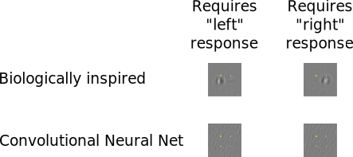

Visual processing is often studied using very simple images such as line drawings or sinusoidal gratings. That seems odd given that our visual experience of the world is so much more rich.

Compare the two images. The one on the left is a low contrast grating, much like what classical studies on visual perception used. The one on the right is a random photograph from my mobile phone. Although the right one is a rather boring photograph (I'm not a great photographer), it contains so much more detail than the left image. Many experiments on visual processing ask what it is about an image that allows us to detect a certain object in an image. But they do so with images like the ones on the left, and they might miss a lot of the factors that warn us not to step into the water on the right.
In a recent paper, I explore how target detection works in more complex images. One callenge is these images is that we usually attempt to detect objects that are mixed with the background. They may have similar colors or may be partly occluded as the alligators in the image above. Furthermore, different lighting conditions may make similar objects appear quite similar. To mimic this situation in the lab, I used a model for natural images that describes a probability distribution over natural images. In recent years, a specific class of such models, called generative adversarial nets, has been shown to create extremely realistic images such as these or these. I used these models to generate random images, but I added a constraint that the resulting images had to contain an edge segment in a certain part of the image. I then asked people to detect these edge segments.
First of all, this is a very hard task. That's actually a good thing. In order to study how the visual system works, we have to push it to its absolute limits and force it to make mistakes. We can then ask where the system made mistakes and where it didn't and we can hope to learn something from that. The observers in my experiment looked at about 4000 such edge images and they were able to correctly detect the edge segment in about 75% of those.
I wanted to have a quantitative measure of how well different classes of image features would contribute to the behaviour of my observers in this experiment. That's why I developed a number of observer models to describe the observers' behaviour. Such an observer model is a mathematical formula that takes a vector of pixel values (i.e. the image) as input and then returns a probability that the observer responded a certain way. There have been many different observer models proposed in the past. Often, they were rooted in more or less detailed understanding of the physiology of the visual system. In recent computational vision, one class of models has received a lot of attention. Convolutional neural networks are only very loosely rooted in knowledge of the visual system's physiology, but they are very powerful at recognizing objects in images and they form the basis of much of the excitement about A.I. these days.
When I compared how well the physiologically inspired models and convolutional neural networks described human responses in this experiment, I found that both did about equally well. However, when I used these models to create another set of images that directly targeted a specific performance level, big differences emerged.

The image shows example images for which the observer model is 95% certain that an observer would respond "left" (left column) or "right" (right column). In the first row, the images have been generated for a model based on much of our knowledge of the biology of early visual cortex. There clearly seems to be something on the left side when the model thinks a human would respond left and there clearly is something on the right side when the model thinks a human would respond right. Although these things don't really look too much like edges, they are reasonably close to edges. At least they have an orientation and the pixel's brightness changes in some consistent way. This is very different for the convolutional neural network model in the lower row. These images seem to have some wavy texture all over but there isn't really any clear left-right structure. In fact observers in the lab could, even with quite some practice, not tell the images generated by the convolutional neural network apart.
This supports the idea that for an understanding of human visual perception, there is still a lot of value in knowing about the computational principles that underlie processing in the brain.